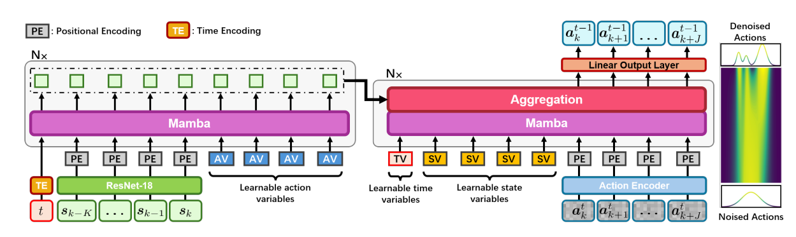
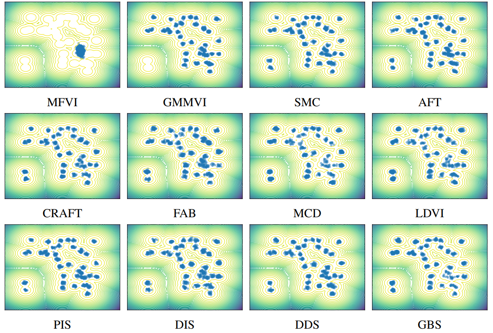
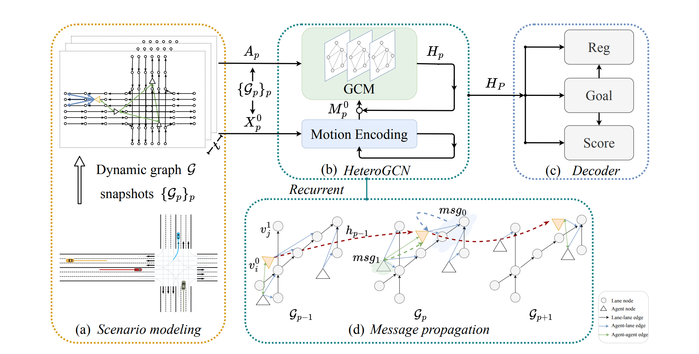
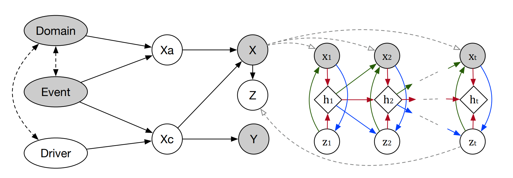
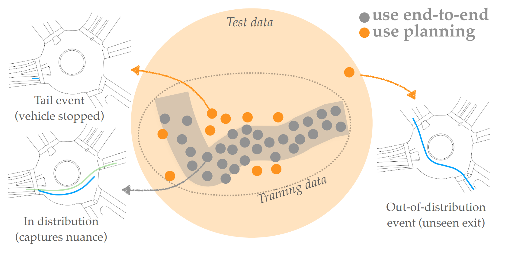

|
I am a PhD student in the Autonomous Learning Robots (ALR) at the Karlsruhe Institute of Technology (KIT), Germany. My research focuses on robotics and machine learning supervised by Gerhard Neumann and Rudolf Lioutikov. Email / Google Scholar / Github / |

|
|
My primary research goal is to build intelligent embodied agents that assist people in their everyday lives and communicate intuitively. One of the key challenges to be solved towards this goal is learning from multimodal, uncurated human demonstrations without rewards. Therefore, I am working on novel methods that exploit multimodality and learn versatile behaviour. Representative papers are highlighted. |
|

Xiaogang Jia, Qian Wang, Atalay Donat, Bowen Xing, Ge Li, Hongyi Zhou, Onur Celik, Denis Blessing, Rudolf Lioutikov, Gerhard Neumann CoRL 2024 OpenReview This work presents Mamba Imitation Learning (MaIL), a novel imitation learning (IL) architecture that provides an alternative to state-of-the-art (SoTA) Transformer-based policies. MaIL leverages Mamba, a state-space model designed to selectively focus on key features of the data. While Transformers are highly effective in data-rich environments due to their dense attention mechanisms, they can struggle with smaller datasets, often leading to overfitting or suboptimal representation learning. In contrast, Mamba's architecture enhances representation learning efficiency by focusing on key features and reducing model complexity. This approach mitigates overfitting and enhances generalization, even when working with limited data. Extensive evaluations on the LIBERO IL benchmark demonstrate that MaIL consistently outperforms Transformers on all LIBERO tasks with limited data and matches their performance when the full dataset is available. Additionally, MaIL's effectiveness is validated through its superior performance in three real robot experiments. |
|

Denis Blessing, Xiaogang Jia, Johannes Esslinger, Francisco Vargas, Gerhard Neumann ICML 2024 OpenReview Monte Carlo methods, Variational Inference, and their combinations play a pivotal role in sampling from intractable probability distributions. However, current studies lack a unified evaluation framework, relying on disparate performance measures and limited method comparisons across diverse tasks, complicating the assessment of progress and hindering the decision-making of practitioners. In response to these challenges, our work introduces a benchmark that evaluates sampling methods using a standardized task suite and a broad range of performance criteria. Moreover, we study existing metrics for quantifying mode collapse and introduce novel metrics for this purpose. Our findings provide insights into strengths and weaknesses of existing sampling methods, serving as a valuable reference for future developments. |

Xiaogang Jia, Denis Blessing, Xinkai Jiang, Moritz Reuss, Atalay Donat, Rudolf Lioutikov , Gerhard Neumann ICLR 2024 OpenReview Introducing D3IL, a novel set of simulation benchmark environments and datasets tailored for Imitation Learning, D3IL is uniquely designed to challenge and evaluate AI models on their ability to learn and replicate diverse, multi-modal human behaviors. Our environments encompass multiple sub-tasks and object manipulations, providing a rich diversity in behavioral data, a feature often lacking in other datasets. We also introduce practical metrics to effectively quantify a model's capacity to capture and reproduce this diversity. Extensive evaluations of state-of-the-art methods on D3IL offer insightful benchmarks, guiding the development of future imitation learning algorithms capable of generalizing complex human behaviors. |

Moritz Reuss, Maximilian Li, Xiaogang Jia, Rudolf Lioutikov Best Paper Award @ Workshop on Learning from Diverse, Offline Data (L-DOD) @ ICRA 2023, Robotics: Science and Systems (RSS), 2023 project page / Code / arXiv We present a novel policy representation, called BESO, for goal-conditioned imitation learning using score-based diffusion models. BESO is able to effectively learn goal-directed, multi-modal behavior from uncurated reward-free offline-data. On several challening benchmarks our method outperforms current policy representation by a wide margin. BESO can also be used as a standard policy for imitation learning and achieves state-of-the-art performance with only 3 denoising steps. |

Denis Blessing, Onur Celik, Xiaogang Jia, Moritz Reuss, Maximilian Xiling, Rudolf Lioutikov , Gerhard Neumann Thirty-seventh Conference on Neural Information Processing Systems (NeurIPS) , 2023 arXiv We introduce the Information Maximizing Curriculum method to address mode-averaging in imitation learning by enabling the model to specialize in representable data. This approach is enhanced by a mixture of experts (MoE) policy, each focusing on different data subsets, and employs a unique maximum entropy-based objective for full dataset coverage. |
|

Xing Gao, Xiaogang Jia, Yikang Li, Hongkai Xiong IEEE Robotics and Automation Letters, 2023 arXiv In this paper, we resort to dynamic heterogeneous graphs to model the scenario. Various scenario components including vehicles (agents) and lanes, multi-type interactions, and their changes over time are jointly encoded. Furthermore, we design a novel heterogeneous graph convolutional recurrent network, aggregating diverse interaction information and capturing their evolution, to learn to exploit intrinsic spatio-temporal dependencies in dynamic graphs and obtain effective representations of dynamic scenarios. Finally, with a motion forecasting decoder, our model predicts realistic and multi-modal future trajectories of agents and outperforms state-of-the-art published works on several motion forecasting benchmarks. |
|

Yeping Hu, Xiaogang Jia, Masayoshi Tomizuka, Wei Zhan International Conference on Robotics and Automation (ICRA), 2022 arXiv We construct a structural causal model for vehicle intention prediction tasks to learn an invariant representation of input driving data for domain generalization. We further integrate a recurrent latent variable model into our structural causal model to better capture temporal latent dependencies from time-series input data. The effectiveness of our approach is evaluated via real-world driving data. |
|

Liting Sun, Xiaogang Jia, Anca D Dragan Robotics: Science and Systems (RSS), 2021 arXiv In this work, we analyze one family of approaches that strive to get the best of both worlds: use the end-to-end predictor on common cases, but do not rely on it for tail events / out-of-distribution inputs -- switch to the planning-based predictor there. We contribute an analysis of different approaches for detecting when to make this switch, using an autonomous driving domain. We find that promising approaches based on ensembling or generative modeling of the training distribution might not be reliable, but that there very simple methods which can perform surprisingly well -- including training a classifier to pick up on tell-tale issues in predicted trajectories. |
|
The website is based on the code from source code! |